9 Rozkłady danych
9.1 Podstawowe pojęcia
9.1.1 Zmienne losowe
Zmienna losowa (ang. random variables) to wartość liczbowa, której wynik zależy od losu. Prawdopodobieństwo uzyskania danej wartości zależy od gęstości prawdopodobieństwa danej zmiennej \(p(x)\) (lub \(f(x)\)).
Zmienne dyskretne
- Zmienne dyskretne przyjmują konkretną wartość liczbową (zliczenie)
- Przykładem zmiennych dyskretnych jest rzut monetą albo rzut kostką
Zmienne ciągłe
- zmienna ciągła może przyjmować wszystkie wartości z określonego przedziału liczbowego
- Przykładem zmiennych ciągłych jest wzrost, temperatura
9.2 Rozkłady zmiennych losowych
Rozkłady zmiennych losowych można podzielić na:
- rozkłady dyskretne
- rozkłady ciągłe
- ani dyskretne, ani ciągłe.
Rozkłady można także podzielić na rozkłady teoretyczne (tj. oparte o pewne założenia) oraz rozkłady empiryczne (tj. rozkład wartości oparty o obserwowane dane).
9.2.1 Rozkłady dyskretne
- Bernoulliego (zero-jedynkowy)
- Dwumianowy
- Poissona
- Geometryczny
- Hipergeometryczny
9.2.2 Rozkłady ciągłe
- Normalny
- t-Studenta
- Chi-kwadrat
- Fishera
9.3 Rozkłady danych w R
Dla każdego rozkładu danych dostępnego w R istnieją cztery funkcje, rozpoczynające się od kolejnych liter:
- d - zwraca wartość funkcji gęstości rozkładu (pdf - probability density function)
- p - zwraca wartości dystrybuanty
- q - działa odwrotnie do p: dla zadanego prawdopodobieństwa kumulowanego zwraca wartość zmiennej (kwantyl), poniżej której znajduje się ten odsetek obserwacji. Np.
qnorm(0.975)zwraca wartość, poniżej której leży 97,5% obserwacji standaryzowanego rozkładu normalnego - r - zwraca losowo wygenerowane wartości z danego rozkładu
?Distributionswiecej informacji: https://github.com/bearloga/tinydensR
9.4 Rozkład normalny
- Zwany inaczej rozkładem Gaussa.
- Opisywany jest za pomocą dwóch parametrów: średniej \(\mu\) oraz wariancji \(\sigma^2\) (odchylenie standardowe rozkładu jest określane przez \(\sigma\)).
- Opisuje on sytuacje, gdy większość przypadków ma wartość zbliżoną do średniej, a im wartość jest dalsza od średniej tym jest ich coraz mniej.
- Jeden z najważniejszych rozkładów prawdopodobieństwa, odgrywający ważną rolę w statystyce. Wykres funkcji prawdopodobieństwa tego rozkładu jest krzywą w kształcie dzwonu.
- Znaczenie tego rozkładu wynika z faktu, że często jest on obserwowany w naturze. Obserwacja wielu zjawisk przyrodniczych pozwoliła stwierdzić, że podlegają one prawu rozkładu normalnego lub bardzo zbliżonego do niego.
Rozkład normalny o średniej równej 0 a odchyleniu standardowym równym 1 nazywamy standaryzowanym rozkładem normalnym i oznaczamy N(0,1).
9.4.1 Reguła trzech sigm
We wszystkich rozkładach normalnych funkcja gęstości jest symetryczna względem wartości średniej rozkładu.
Prawdopodobieństwo, że wartość zmiennej znajduje się w odległości nie większej (lub mniejszej):
- niż jedno odchylenie standardowe od średniej wynosi 68.3%;
- niż dwa odchylenia standardowe od średniej wynosi 95.5%;
- niż trzy odchylenia standardowe od średniej wynosi 99.7%.
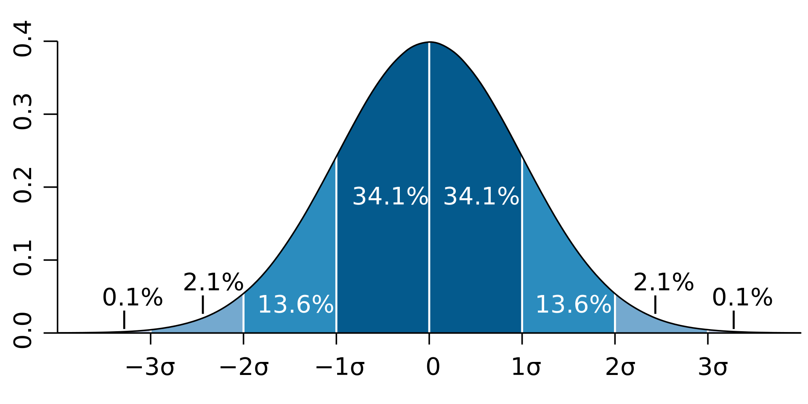
rnorm(n = 10, mean = 0, sd = 1) [1] 2.42980571 0.68819598 0.54101821 0.08877283 1.15162683 0.24139850
[7] 0.11006746 1.50861423 0.91869710 0.68080334library(ggplot2)
losowe <- data.frame(x = rnorm(n = 10000, mean = 0, sd = 1))
ggplot(losowe, aes(x = x)) +
geom_histogram(bins = 40) +
labs(x = "wartość", y = "liczba obserwacji") +
theme_bw()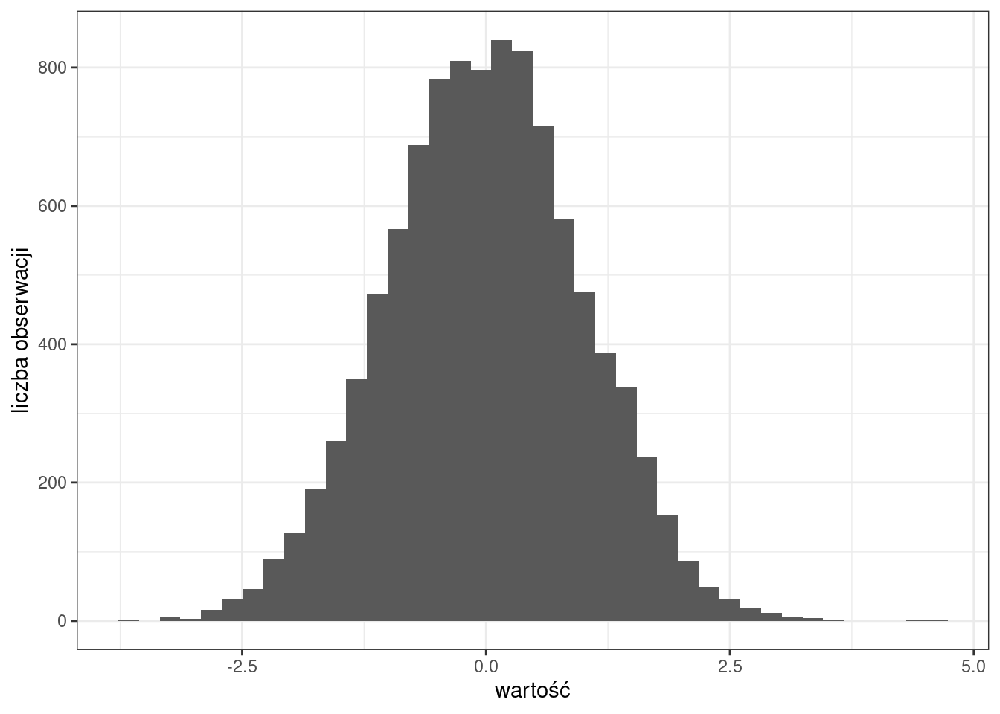
Wykresy w tym skrypcie rysujemy pakietem ggplot2. Wyjątkiem są rysunki przedstawiające funkcje teoretyczne (a nie dane) - takie jak krzywa gęstości rozkładu poniżej. Do nich wygodniejsza jest funkcja curve() z grafiki podstawowej, która rysuje wykres wzoru matematycznego bez potrzeby tworzenia ramki danych.
curve(dnorm(x, mean = 0, sd = 1), xlim = c(-5, 5))
abline(h = 0)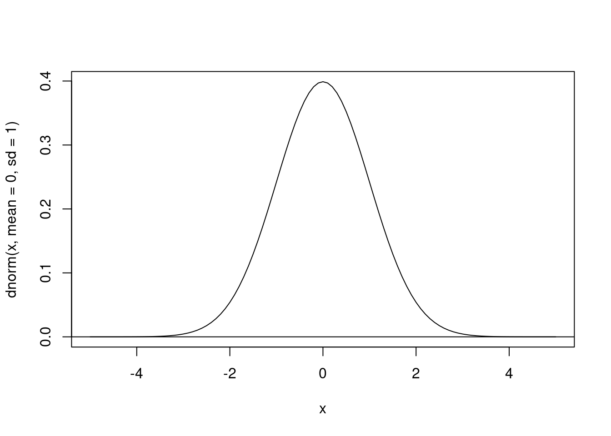
Funkcja pnorm() zwraca prawdopodobieństwo, że zmienna przyjmie wartość mniejszą od podanej. Poniżej: prawdopodobieństwo uzyskania wartości mniejszej od 90 w rozkładzie normalnym o średniej 120 i odchyleniu standardowym 20.
pnorm(q = 90, mean = 120, sd = 20, lower.tail = TRUE)[1] 0.0668072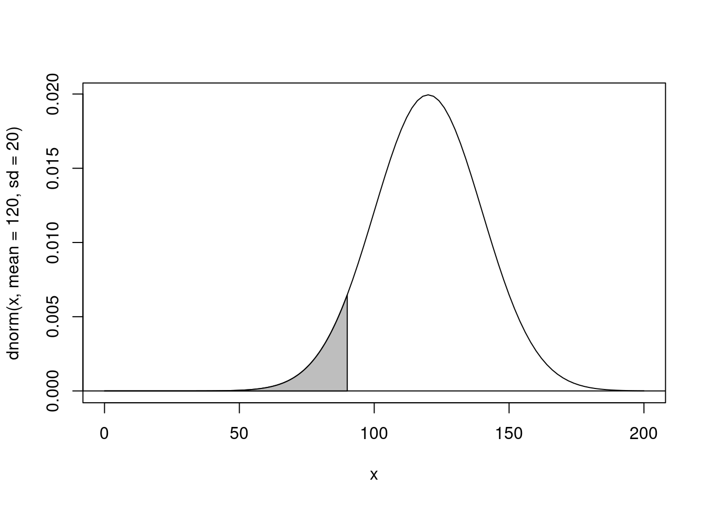
Funkcja qnorm() działa w drugą stronę: dla podanego prawdopodobieństwa zwraca wartość zmiennej. Podstawiając wynik z poprzedniego przykładu (6,68%) otrzymamy z powrotem wartość 90.
qnorm(p = 0.0668072, mean = 120, sd = 20, lower.tail = TRUE)[1] 90Przykład: Załóżmy, że wyniki z egzaminów wstępnych mają rozkład normalny, ze średnią 72 punktów oraz odchyleniem standardowym 15.2 Jaki procent studentów uzyska wynik 84 lub wyższy na egzaminie?
pnorm(84, mean=72, sd=15.2, lower.tail=FALSE) [1] 0.2149176Odpowiedź: Procent studentów z wynikiem 84 punkty lub większym wynosi 21,5%
9.4.2 Test Shapiro-Wilka
- służy do sprawdzenia czy analizowana zmienna ma rozkład zbliżony do rozkładu normalnego.
- hipoteza zerowa testu: rozkład analizowanej zmiennej jest zbliżony do rozkładu normalnego.
- istotny wynik testu Shapiro-Wilka (p-value <0.05) świadczy o tym, że rozkład zmiennej obserwowanej nie jest podobny do rozkładu normalnego
- w R obliczany za pomocą
shapiro.test() - testowanie normalności rozkładu jest wymagane przy użyciu testów parametrycznych, np: testy t-Studenta, analiza wariancji, etc.
- Alternatywą do testowania normalności rozkładu jest test Kołmogorowa-Smirnowa
set.seed(123456)
x <- rnorm(1000, mean = 10, sd = 2)ggplot(data.frame(x = x), aes(x = x)) +
geom_histogram(bins = 30) +
labs(x = "wartość", y = "liczba obserwacji") +
theme_bw()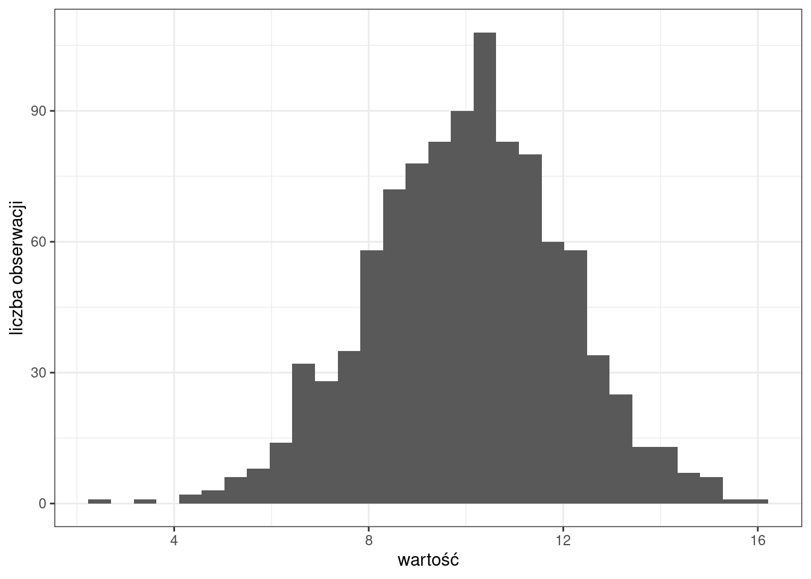
shapiro.test(x)
Shapiro-Wilk normality test
data: x
W = 0.99881, p-value = 0.7595Wartość p-value wynosi 0,7595, czyli jest większa od 0,05. Nie mamy zatem podstaw do odrzucenia hipotezy zerowej o normalności rozkładu i możemy traktować go jako zbliżony do normalnego. Warto pamiętać, że brak odrzucenia \(H_0\) nie jest dowodem normalności - test mógł odstępstwa od niej po prostu nie wykryć, co jest tym bardziej prawdopodobne, im mniejsza próba.
Ze zbioru danych gapminder wyselekcjonować dane dla kontynentu Afryka. Wykonać histogram dla zmiennej lifeExp oraz test Shapiro-Wilka. Czy zmienna lifeExp dla kontynentu Afryka ma rozkład zbliżony do rozkładu normalnego?
Rozwiązanie:
Wynik testu (p-value < 0.05) wskazuje na odrzucenie hipotezy zerowej o zgodności z rozkładem normalnym. Dane nie mają rozkładu normalnego.
library(dplyr)
afryka <- filter(gapminder, continent == 'Africa')
ggplot(afryka, aes(x = lifeExp)) + geom_histogram()
shapiro.test(afryka$lifeExp)9.5 Rozkład t-Studenta
- Rozkład t-Studenta powstaje podczas pobierania próbek z populacji o rozkładzie normalnym, gdy wielkość próby jest mała, a odchylenie standardowe populacji jest nieznane. Stosuje się go wtedy do estymacji średniej w populacji (patrz rozdział Estymacja punktowa i przedziałowa).
- Rozkład ten zależy tylko od jednego parametru - liczby stopni swobody (parametr \(df\)). Im więcej stopni swobody, tym rozkład bardziej zbliżony do rozkładu normalnego.
- Rozkład t-Studenta jest symetryczny, dzwonowaty podobnie jak rozkład normalny, ale posiada więcej wartości dalej od średniej (tj. w pobliżu ogona)
rt(10, df=1) [1] 0.92297916 -0.20165942 0.08419619 -0.80070298 -0.81496737
[6] 2.80093963 1.11345374 -1.46005179 -200.42356127 1.61274179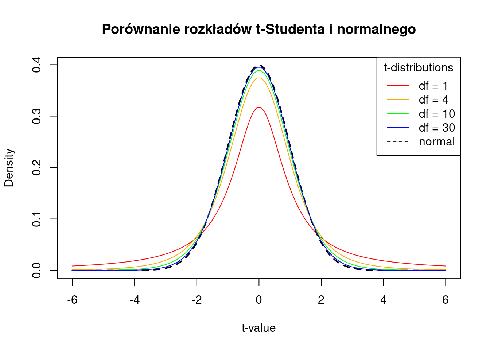
9.6 Rozkłady empiryczne
Rozkład empiryczny - rozkład wartości oparty o obserwowane dane. Najczęściej jest przedstawiany za pomocą histogramu.

data("gapminder", package = "gapminder")
library(ggplot2)9.6.1 Histogram
- Rozkład oczekiwanej długości trwania życia
ggplot(data = gapminder, aes(x = lifeExp)) + geom_histogram(binwidth = 2) + theme_bw()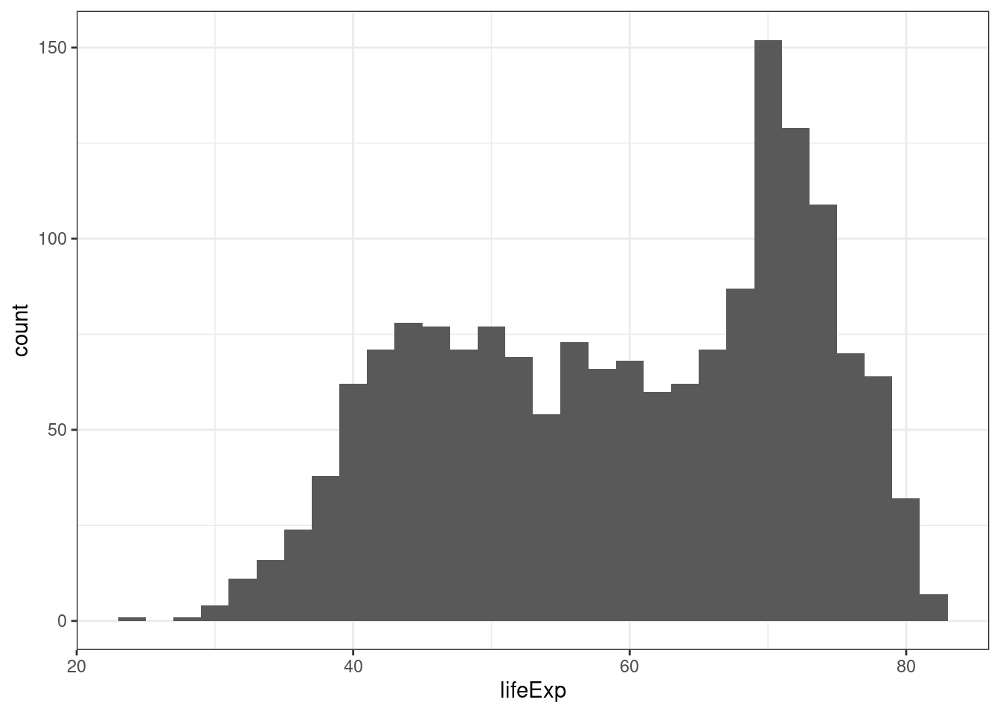
Określ jaki rozkład ma oczekiwana długość trwania życia: symetryczny/asymetryczny lewostronnie/asymetryczny prawostronnie, jednomodalny/dwumodalny/wielomodalny?
- Rozkład produktu krajowego brutto (gdpPercap)
ggplot(data = gapminder, aes(x = gdpPercap)) + geom_histogram(binwidth=10000) + theme_bw()
Określ jaki rozkład ma produkt krajowy brutto: symetryczny/asymetryczny lewostronnie/asymetryczny prawostronnie, jednomodalny/dwumodalny/wielomodalny?
Wykonaj histogram dla zmiennej gdpPercap, ustaw szerokość przedziałów na 5000 (binwidth = 5000). Jaki rozkład ma zmienna gdpPercap?
Rozwiązanie:
Jest to rozkład asymetryczny, prawostronny.
ggplot(data = gapminder, aes(x = gdpPercap)) + geom_histogram(binwidth=5000) + theme_bw()Wykonaj histogram dla zmiennej pop. Określ jaki rozkład ma zmienna pop: symetryczny/asymetryczny lewostronnie/asymetryczny prawostronnie, jednomodalny/dwumodalny/wielomodalny?
Rozwiązanie:
ggplot(data = gapminder, aes(x = pop)) + geom_histogram() + theme_bw()- Rozkład oczekiwanej długości trwania życia (lifeExp) według kontynentów
ggplot(gapminder, aes(x = lifeExp)) +
geom_histogram() +
facet_wrap(~continent, ncol = 3) +
theme_bw()`stat_bin()` using `bins = 30`. Pick better value `binwidth`.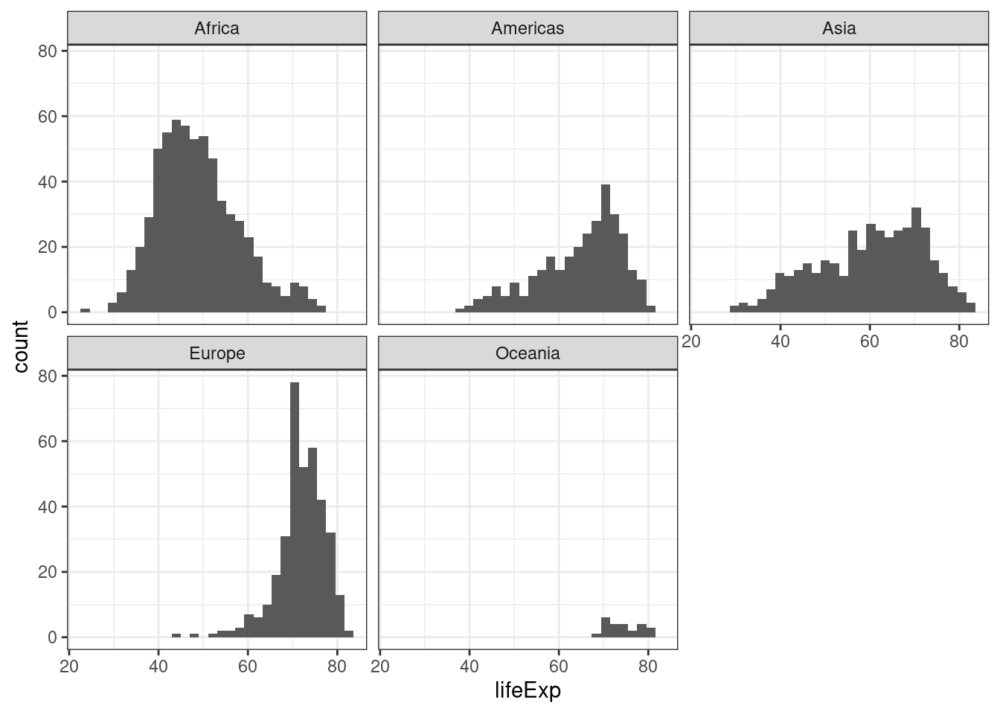
Określ jaki rozkład ma oczekiwana długość trwania życia na poszczególnych kontynentach: symetryczny/asymetryczny lewostronnie/asymetryczny prawostronnie, jednomodalny/dwumodalny/wielomodalny?
Wykonaj histogram dla zmiennej gdpPercap w podziale na kontynenty oraz określ rozkład zmiennej gdpPercap dla każdego z kontynentów.
Rozwiązanie:
ggplot(data = gapminder, aes(x = gdpPercap)) +
geom_histogram() +
facet_wrap(~continent)9.6.2 Wykres pudełkowy
Wykres pudełkowy poza wizualizacją statystyk opisowych pozwala także na określenie typu rozkładu danych (symetryczny, asymetryczny).
9.6.3 Rozkład danych, a wykres pudełkowy.
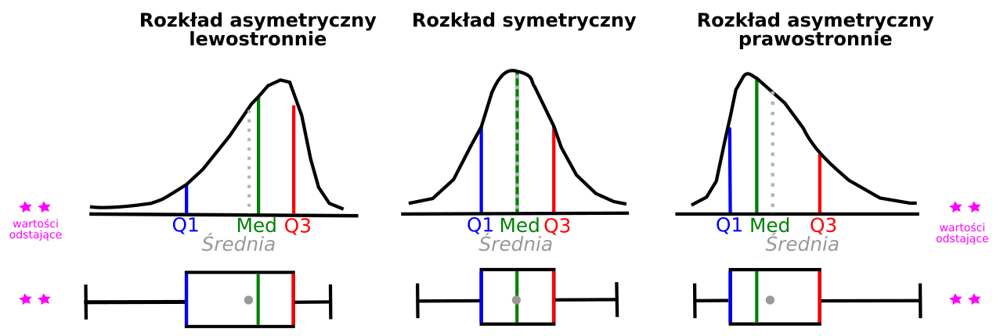
Rozkład symetryczny
- mediana wypada na środku pudełka,
- wąsy równej długości po obu stronach pudełka
Rozkład asymetryczny lewostronnie
- mediana wypada bliżej górnej krawędzi pudełka,
- mediana > średnia
- wąsy wychodzące z dolnej krawędzi pudełka są dłuższe.
Rozkład asymetryczny prawostronnie
- mediana wypada bliżej dolnej krawędzi pudełka,
- mediana < średnia
- wąsy wychodzące z górnej krawędzi pudełka są dłuższe.
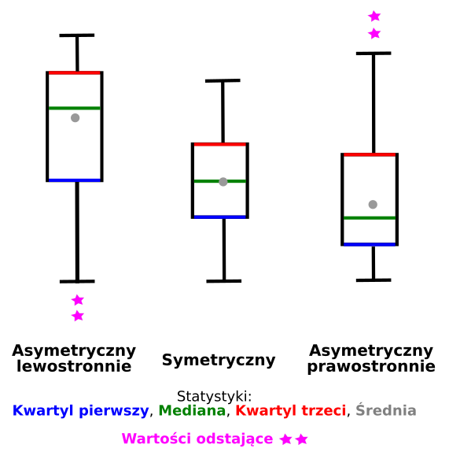
Wykres pudełkowy dla oczekiwanej długości trwania życia według kontynentów
ggplot(data = gapminder, aes(x = continent, y = lifeExp)) +
geom_boxplot() +
stat_summary(fun = mean, geom="point", shape=20, size=4) +
labs(x = "Kontynent",
y = "Oczekiwana długość trwania życia",
title = "Zróżnicowanie oczekiwanej długości trwania życia na kontynentach") +
theme_bw() 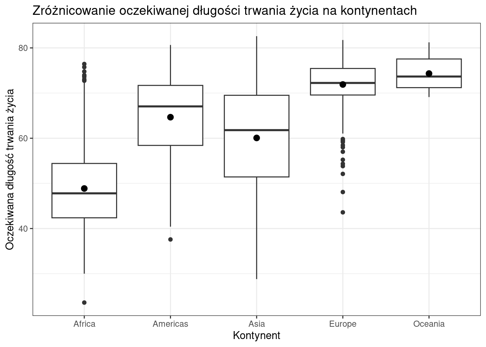
Proszę wykonać wykres pudełkowy przedstawiający rozkład wartości gdpPercap według kontynentów. Jak określisz rozkłady danych na poszczególnych kontynentach?
Rozwiązanie:
ggplot(data = gapminder, aes(x = continent, y = gdpPercap)) +
geom_boxplot()9.7 Miary asymetrii i koncentracji
9.7.1 Miary asymetrii
Asymetrię rozkładu określa się za pomocą skośności.
- skośność = 0 - rozkład symetryczny
- skośność < 0 - rozkład asymetryczny lewostronnie (rozkład ma dłuższy lewy ogon)
- skośność > 0 - rozkład asymetryczny prawostronnie (rozkład ma dłuższy prawy ogon)

library(e1071)
Attaching package: 'e1071'The following object is masked from 'package:ggplot2':
elementskewness(gapminder$lifeExp)[1] -0.25225759.7.2 Miary koncentracji
Miary koncentracji opisują koncentrację wartości cechy wokół średniej. Jedną z miar koncentracji jest kurtoza.
Funkcja kurtosis() z pakietu e1071 domyślnie zwraca kurtozę nadmiarową, czyli liczoną względem rozkładu normalnego - dla rozkładu normalnego wynosi ona 0. Stąd interpretacja:
- K > 0 - rozkład bardziej wysmukły niż normalny (leptokurtyczny); ma “grubsze” ogony, czyli częściej pojawiają się w nim wartości skrajne
- K = 0 - koncentracja wartości jak w rozkładzie normalnym (mezokurtyczny)
- K < 0 - rozkład bardziej spłaszczony niż normalny (platykurtyczny); ma “cieńsze” ogony
Uwaga: o kurtozie często mówi się jako o “koncentracji wokół średniej”, ale decydują o niej przede wszystkim ogony rozkładu, czyli częstość występowania wartości skrajnych.

library(e1071)
kurtosis(gapminder$lifeExp)[1] -1.129098Oblicz skośność oraz kurtozę dla zmiennej gdpPercap w zbiorze danych gapminder.
Rozwiązanie:
library(e1071)
skewness(gapminder$gdpPercap)
kurtosis(gapminder$gdpPercap)9.8 Porównanie rozkładów
W statystyce wykres kwantylowy (QQ-plot) jest wykresem prawdopodobieństwa, który porównuje (w graficzny sposób) 2 rozkłady prawdopodobieństwa przez wykreślenie ich kwantyli na przeciwnych osiach (x, y). Jeśli 2 porównywane rozkłady są podobne, punkty na wykresie kwantylowym ułożą się wzdłuż linii prostej. Wykres normalności (ang. Normal QQ Plot) porównuje rozkład próbki z rozkładem normalnym.
W R wykresy te można wykreślić używając funkcji qqplot() oraz qqnorm() z grafiki podstawowej. Wykonując wykres za pomocą pakietu ggplot2 dodajemy warstwę stat_qq() (punkty) oraz stat_qq_line() (linia odniesienia) - bez linii odniesienia wykres jest znacznie trudniejszy do odczytania.
Porównanie rozkładu zmiennej lifeExp dla kontynentu Afryka z rozkładem teoretycznym.
#wyselekcjonować dane dla kontynentu Afryka dotyczące średniej długości trwania życia
dane_Africa <- gapminder[gapminder$continent == 'Africa',]ggplot(data = dane_Africa, aes(sample = lifeExp)) +
stat_qq() +
stat_qq_line(color = "red") +
labs(x = "Kwantyle teoretyczne (rozkład normalny)",
y = "Kwantyle z próby") +
theme_bw()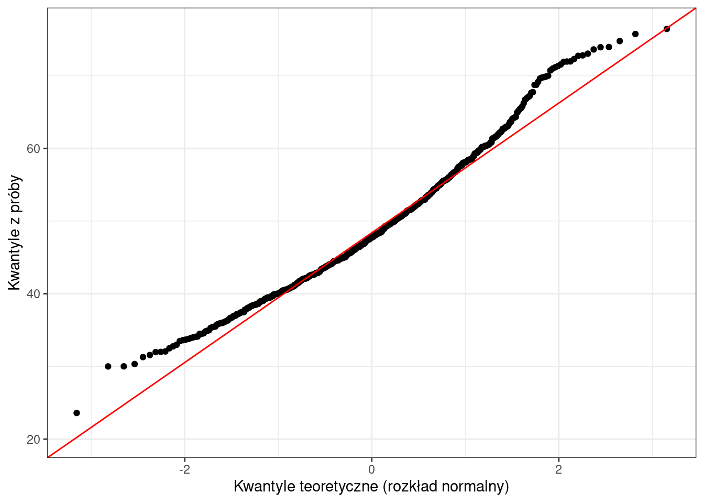
Interpretacja: punkty w środkowej części wykresu układają się blisko linii odniesienia, ale na obu końcach wyraźnie od niej odchodzą - co oznacza, że rozkład oczekiwanej długości trwania życia w Afryce ma “grubsze” ogony niż rozkład normalny. Wniosek jest zgodny z wynikiem testu Shapiro-Wilka z zadania powyżej, który odrzucił hipotezę o normalności rozkładu.
9.9 Dodatkowe materiały
- Obliczanie prawdopodobieństwa z rozkładów
https://gallery.shinyapps.io/dist_calc/
- Ilustracja wykresu kwantylowego
https://xiongge.shinyapps.io/QQplots/